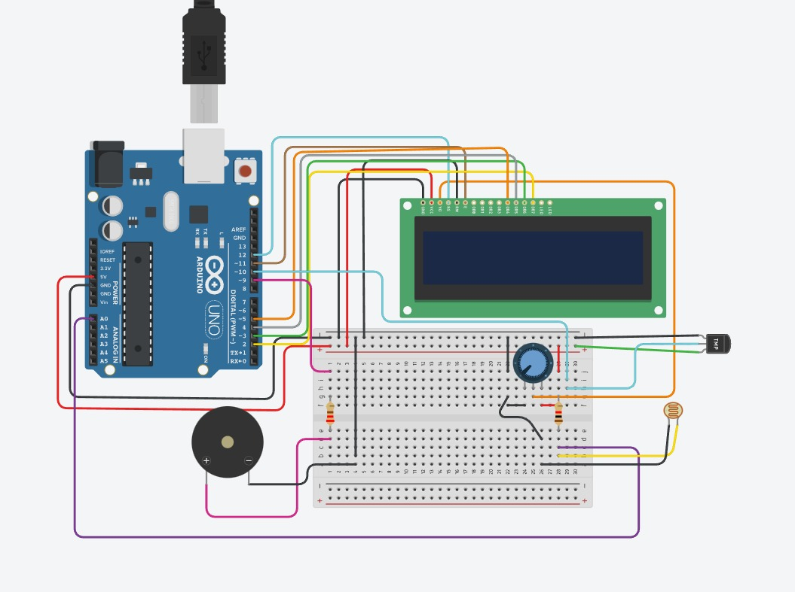
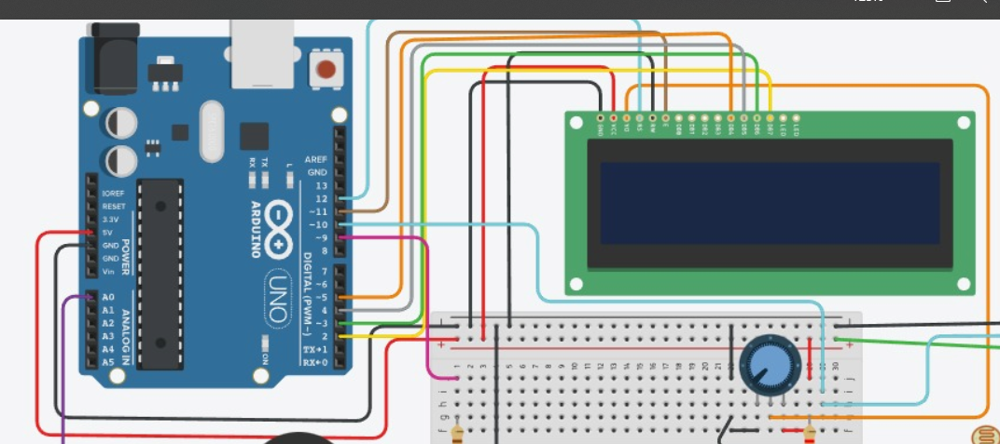
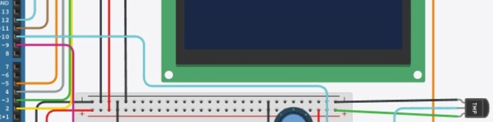
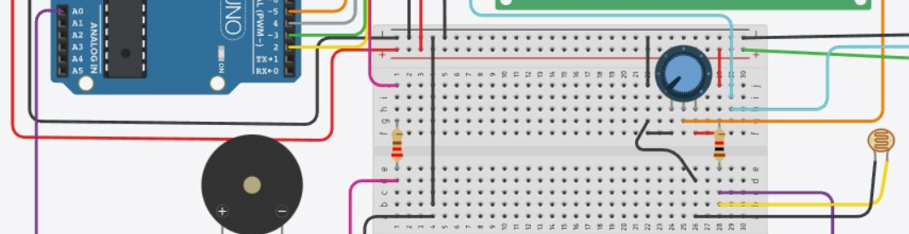
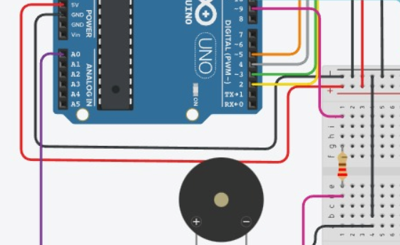
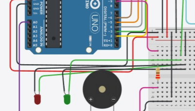

O Projeto
Motivação e Objetivo
Motivação: Como a falta de dados ambientais afeta o cultivo de plantas.
Objetivo: Monitorar umidade, temperatura e luminosidade para garantir condições ideais.
Contextualização: Uso de IoT/Automação Agrícola.
Esquema Conceitual
Autores
Especificações Técnicas
Hardware & Componentes
- 01 Sensor de umidade DHT
- 01 Sensor de luminosidade LDR
- 02 Leds
- 01 Placa Black Board Uno R3
- 01 Buzzer
- 01 Resistor de 1.000 ohms
- 01 Potenciômetro de 10.000 ohms
- 01 Resistor de 220 ohms
- 01 LCD Display
- 23 Jumps
Softwares & Plataformas
- IDE: Arduino IDE / VS Code
- Linguagens: C++ (Arduino)
- libraries do IDE:DHT .h e liquid crystal .h
- Banco de Dados: MySQL ou PostgreSQL
Montagem e Funcionamento
1. Conexão do LCD (pinos: 7, 6, 5, 4, 3, 2)
primeiro, o lcd deve ser conectado aos pinos 7,6,5,4,3,2 usando jumpers fêmeas/machos bem como os 2 pinos de alimentação e terra, e deve-se também conectar um potenciometro ligado a entrada 3 do lcd
2. Conexão do DHT11 (pino 13)
o sensor DHT deve-se ser conectado ao pino 13 com alimentação e terra, com jumpers do mesmo tipo q o lcd
3.conexão do LDR (pino 0)
o pino o deve ser conectado ao analog 0 e o terra, com um resistor de 1000 omhs e posicionado na parte exterior do dispositivo devido a sua função de captar a luz
recomenda-se que os sensores devem ser fixados de alguma maneira (EX: fita adesiva)
4. conexão do buzzer (pino 9)
o buzzer deve estar conectado ao pino 9 com um resistor de 220 a fim de deixar o audio mais alto
5. conexão dos leds (pino 11)
os leds devem se conectar ao pino 11 e GND usando jumperes para extender o alcance dos fios
Demonstração do Projeto
Código Fonte
Abaixo, um trecho essencial da lógica de leitura dos sensores no Arduino:
// Exemplo simplificado da lógica do Arduino
#include <Wire.h>
#include <Adafruit_MLX90614.h>
Trecho de Código: Lógica de Alerta (Função loop)
O trecho abaixo mostra a lógica principal de leitura e verificação de limites ambientais, acionando o LCD e o Buzzer quando necessário.
void loop()
// Pausa por 2 segundos antes de fazer uma nova leitura
delay(2000);
// Lê LDR, Umidade (h) e Temperatura (t)
valorldr=analogRead(ldr);
float h = dht.readHumidity();
float t = dht.readTemperature();
// Verifica se a umidade está alta ou baixa
if (h>70) { humiplus = true; }
Reflexões Finais
Desafios Enfrentados
Problema: Dificuldade em instalar e configurar o display LCD
Solução: Pedimos ajuda a uma pessoa mais experiente que nos mostrou como usar um template e código do tinkercad para montar e testar o dispositivo.
Lições Aprendidas
- A importância de buscar ajuda e aprender com outras pessoas